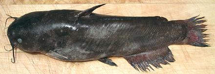

Bullhead

[Ameiurus melas (Black Bullhead) | Ameiurus nebulosus
(Brown Bullhead) | Ameiurus natalis (Yellow Bullhead); all of
family Ictaluridae]
Bullheads are a variety of American freshwater catfish that inhabits slow moving backwaters with soft bottoms. They differ from most catfish in having squared off tails and being relatively small in size. A. melas' natural range is from the borders of Canada to Mexico and from the Rockies to the Appalachians. A natalis and A. nebulosus range from the Mississippi to the Atlantic but nebulosus extends north into Canada.
These fish can grow to over 24 inches and nearly 8 pounds, but are commonly about 10 inches and 1 pound (A. natalis a little smaller). A. melas has been introduced to Europe where it forms dense stunted populations, making it rather unpopular. These fish tolerate very adverse conditions, so it's unlikely they'll be able to get rid of them now. The photo specimen, probably A. melas or a hybrid, was 12-1/2 inches long and weighed 1 pound 4-1/2 ounces.
Both A. nebulosus and A. melas are currently farmed. None of these fish are considered threatened (they fall more into the nusience set), IUCN Red List "Not Evaluated". Catfish have no scales, convenient for preparation, but it means they are not kosher or halal. Observant Jews and Muslims need to use Carp instead and deal with the spines.
More on Catfish.
|
Bullhead flesh is of a moderately dark color, but unlike darker ocean fish it does not have a strong oily flavor. If you go fishing in a region where bullheads abound, and you catch some, they are fine to cook and eat. On the other hand, I can't recommend buying them when Channel Cat is so available "on the hoof", and the more delicate Vietnamese catfish fillets are very economical. Buying: Bullheads may be more commonly found east of the Rockies, but here in Southern California they sometimes appear in the larger Asian markets. Cleaning: Bullheads, like other Catfish, have no scales, but they are covered with a protective mucous making them exceedingly slippery. Particularly if you intend to use the fish skin-on you can start by sliding it into the sink and scrubbing it with dish washing detergent or a household cleanser, then rinse thoroughly. The innards are stuck in well and will need a bit of pulling and scraping to get them all out. The esophagus is strong and will need to be cut with kitchen shears or a knife. The gills are also stuck in pretty hard, so you'll probably have to cut them loose under the chin with kitchen shears to pull them out. On the other hand, since you probably won't be using the head, why pull them out at all? Fillet: This fish is quite limp, which makes filleting a bit more difficult than with many fish. It's best to remove the head first to make handling easier. The bone structure is fairly orderly, but it doesn't go all the way to the top so you have to feel your way down to it. When I get to the rib cage I just cut it from the backbone with kitchen shears and pull the ribs from the fillet with long nose pliers. Like everything else on this fish they pull fairly hard, but they come out fairly clean without much flesh lost. There are no centerline spines to pull. Instead of filleting, you could simply cut the fish into segments about 1 to 1-1/2 inches long for use in soups and stews with skin and bones intact, as is done for many ethnic recipes. A razor sharp Chinese cleaver knife driven by a soft faced mallet is perfect for this. The skirt (nape) on a Bullhead fillet is large and quite meaty but you will want to use it separately from the main fillet. The inside membrane is too thin to remove but shrinks and will curl the skirt badly. You should cook these skin-on so skin shrink will balance the membrane. If pan frying, fry skin side first. Yield: Bullhead has a very large, heavy head, so yield of edible flesh isn't as good as with Channel Cat. A 1 pound 4-1/4 ounce fish yielded 9-1/2 ounces with skin and skirt on (47%), 7-3/4 ounces without the skirt (38%). Skin and skirt both removed the fillets weighed 6-3/4 ounces (33%). Skin: Bullhead skin is quite tough but thin and does not have a strong or "off" flavor. It shrinks moderately when cooked, but enough that fillets for frying should probably be skinned. Skinning is easy with the standard long knife and cutting board method, but the knife should be tilted a little more steeply towards the skin than with most fish to avoid taking any flesh. Cooking: Bullhead flesh holds its shape well when cooked so almost any cooking method can be used. It can be used for soups and stews as other catfish are. Many ethnic recipes use small catfish and simply cut them into 1 to 1-1/2 inch segments. When using bullhead in a soup or stew, it should go in for only the last 15 minutes. Stir it in well when adding it and avoid stirring after that so it doesn't get broken up. Bullhead fillets can be pan fried "skin-on" but the skin shrinks enough to curl the fillet fairly badly, so it's best to skin the fillets. Stock: The head, bones and fins make a fish stock that's a little strongly flavored for my taste. |